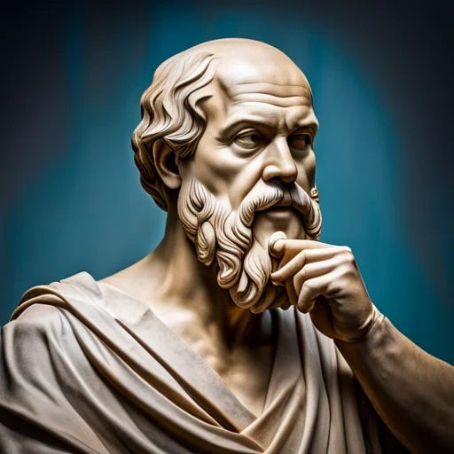

Socrates was a Greek philosopher from Athens who is credited as the founder of Western philosophy and among the first moral philosophers of the ethical tradition of thought. An enigmatic figure, Socrates authored no texts and is known mainly through the posthumous accounts of classical writers, particularly his students Plato and Xenophon.
Plato's dialogues are among the most comprehensive accounts of Socrates to survive from antiquity. They demonstrate the Socratic approach to areas of philosophy including epistemology and ethics. The Platonic Socrates lends his name to the concept of the Socratic method, and also to Socratic irony.